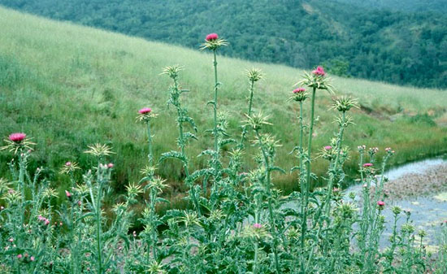
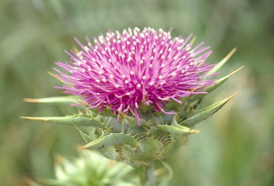

|
EFECTOS DEL CARDO
MARIANO (Silybum marianum)
Klara Tuset, 2004

Silybum Marianum. Copyright © Lee Dittmann,
www.coestatepark.com
Una
de las principales causas de mortalidad entre las tortugas terrestres
mantenidas en cautividad es la lesión hepática y/o renal, que suelen
presentarse asociadas y que tienen como causa una dieta inadecuada
(demasiado alta en proteínas y grasas, fundamentalmente) y el exceso
en la administración de fármacos, normalmente antibióticos, por vía
oral o parenteral (inyecciones intravenosas, subcutáneas o
intramusculares), sin prescripción veterinaria en la mayoría de las
ocasiones. Además, hay que tener en cuenta que muchos de estos
fármacos administrados son hepatóxicos y que las dosis utilizadas
comúnmente no siempre son las más adecuadas para unos animales con un
metabolismo tan lento.
El hígado y los riñones de las tortugas herbívoras son órganos que
están preparados para poder asimilar dietas con un máximo del 7% de
proteína y tienen muy poca capacidad de excreción o eliminación por
medio de la orina de los deshechos y toxinas que se producen en la
absorción de las drogas y medicamentos.
Esto se debe a que su metabolismo es extremadamente lento. Además, en
el caso de las tortugas del género testudo, éstas no orinan con
regularidad debido a la aridez de sus hábitats naturales, sino que
acumulan y retienen líquidos durante el mayor tiempo posible para
evitar la deshidratación. Esto hace que los detritus resultantes del
exceso de proteína en la dieta (urea), grasas (degeneración hepática
grasa) y medicamentos (toxinas) se acumulen en la sangre y órganos
hasta llegar a producir lesiones hepáticas y renales, como la
concentración de cristales de ácido úrico o el fallo orgánico (estos
órganos dejan de funcionar o lo hacen incorrectamente), hasta llegar
incluso a provocar la muerte del animal. Además, el mantenimiento
incorrecto en terrarios favorece la aparición de lesiones hepáticas
extremadamente graves. Por ejemplo, la obesidad provocada por la
sobrealimentación y la falta de actividad física por el mantenimiento
en terrarios de dimensiones reducidas puede provocar lesiones
hepáticas como la lipidosis (acumulación de grasa en los hepatocitos
–células del hígado-). También suele presentarse micosis sistémicas
provocadas por hongos en el hígado de las tortugas mantenidas a
temperaturas inferiores a las debidas, ya que esto provoca la
depresión del sistema inmunitario que favorece su proliferación.
El
cardo mariano (Silybum Marianum) puede sernos muy útil para
prevenir o tratar el daño hepático mediante sustancias naturales como
la silimarina y sin provocar efectos secundarios dañinos. El
cardo mariano es una planta herbácea de la familia Asteraceae que
crece a lo largo de toda la cuenca mediterránea (sur de Europa, sur de
Rusia, Asia Menor y norte de África), por lo que su distribución
coincide plenamente con el hábitat original de las tortugas del género
testudo, y sus hojas jóvenes, poco espinosas, constituyen parte de la
dieta natural de estos animales.
Aunque las propiedades beneficiosas para el hígado del cardo mariano
se conocen desde la antigüedad, fue en la década de los años sesenta
cuando un grupo de investigadores alemanes consiguieron identificar y
aislar el principio hepatoprotector de esta planta (al que denominaron
silimarina) y fue aprobado por la Agencia del Medicamento como
principio activo con propiedades demostradas.

Flor de cardo mariano.
www.viarural.com.ar
Se pueden encontrar numerosísimos compuestos farmacológicos en el
mercado elaborados con silimarina, ya que constituye el tratamiento
médico base de casi todas las afecciones hepáticas humanas, pero es
recomendable utilizar únicamente los extractos en polvo comerciales
con una concentración de silimarina de entre el 70 y el 80% (esta
proporción es la “estandarizada”, es decir la aprobada por la
comunidad científica).
La
utilización directa de las semillas del cardo mariano (con un aspecto
muy similar a las semillas de girasol peladas) puede presentar
problemas, ya que en ellas la concentración de silimarina no siempre
es constante (varía entre el 1,5 y 3%) y es imposible establecer una
dosis exacta si no se conoce la concentración. Además, las semillas
contienen entre un 20-30% de ácidos grasos, por lo que si se abusa de
ellas se incrementa la proporción de grasa de la alimentación. Sin
embargo, con el empleo de las semillas se evita una posible diarrea
ligera que se observa en la administración del extracto estandarizado
en polvo y se aumenta la dosis de fibra de la alimentación.
Los
extractos en polvo deben cumplir siempre la norma de un contenido en
silimarina del 70-80%, ya que las dosis establecidas en este artículo
están referidas a los productos estandarizados como los de las casas
comerciales Natur-Import o Indena.
¿Cómo actúa el Cardo Mariano?
La silimarina es un conjunto de flavolignanos (silibinina,
silicristina, silidianina y sus correspondientes desoxiderivados) que
actúa como protector del hígado (hepatoprotector), anti-oxidante de
las células hepáticas (hepatocitos), reduce el colesterol y previene
la formación de piedras biliares gracias a su estimulación de la
secreción biliar.
La
silimarina refuerza la membrana celular externa de los hepatocitos
evitando que estos absorban las toxinas resultantes de una dieta con
un exceso de grasa o proteína o de la administración de fármacos.
Además, estimula la producción de nuevos hepatocitos gracias a su
acción sobre la polimerasa A.
Estudios en laboratorio realizados por la facultad de medicina de la
Universidad de Palacky (República Checa) demostraron que la
administración de 150 mg de silimarina en humanos acelera en un 70% la
velocidad de eliminación de los agentes hepatotóxicos.
Además, se ha demostrado la eficacia de la silimarina contra el virus
hepatotóxico FV3, también denominado Ranavirus Eritrocítico,
característico de los reptiles y anfibios. Este virus de la familia
iridovirus se descubrió en 1989 en poblaciones de ranas de Canadá y
afecta a los glóbulos rojos provocando graves anemias en los animales
infectados. Este virus se reproduce a temperaturas de 28 grados
centígrados, pero no soporta temperaturas superiores a los 36 grados.
Esta idoneidad de reproducción y supervivencia en temperaturas
corporales relativamente bajas hace que este virus sea propio de
animales ectotérmicos (reptiles y anfibios), aunque también se ha
aislado en pequeñas aves y mamíferos.
Este ranavirus ha sido aislado en los tejidos hepáticos de testudo
hermanni por Heldstab & Bestetti en 1982 y, posteriormente, por el
Instituto de Enfermedades de reptiles y anfibios de la Universidad
Justus Liebig de Giessen.
Tratamiento y dosificación
El tratamiento con cardo mariano refuerza la membrana celular de los
hepatocitos evitando que las toxinas accedan a él, activa la formación
de nuevos hepatocitos y ayuda a reducir el colesterol. Por ello, puede
usarse de manera preventiva o como tratamiento complementario en las
lesiones hepáticas.
•
Administración de semillas:
Sólo es posible en tortugas de gran tamaño y peso, ya que es muy
difícil calcular y medir las dosis en ejemplares pequeños. Aunque se
han administrado las semillas enteras, mezcladas con la comida, en un
grupo de diez tortugas entre los 40 y los 200 gramos de peso sin
muestras de impactación intestinal, es recomendable ofrecer las
semillas enteras a animales por encima de los 300 gramos para evitar
este riesgo.
La
dosis recomendada es de 0,2 gramos de semillas mezcladas con la comida
por cada 500 gramos de peso. Aunque las semillas contienen un 25-30%
de proteína, éstas no llegan a ser asimiladas por la tortuga, ya que
la elevada cantidad de fibra no absorbible (trazas de mucílago) que
contiene las semillas hace que sea imposible.
•
Administración de extracto en polvo:
Deberán usarse extractos estandarizados con un contenido del 70-80% de
silimarina (normalmente en forma de silibina). La dosis recomendada es
de 0,8 mg de silimarina por cada 100 gramos de peso. A la hora de
establecer las dosis es imprescindible fijarse en la concentración de
silimarina, no el contenido total de polvo de cardo. Por ejemplo, las
cápsulas de cardo mariano de la casa Natur-Import contienen 250 gramos
de polvo de semillas con un contenido total del 80% de silimarina y se
administra de la siguiente manera:
1º Cada cápsula contiene 250 mg de polvo de semillas, de los
cuales 200 mg son silimarina (el 80%). El contenido de la cápsula se
diluye en 12,5 ml de agua caliente (se hace una infusión y se deja
reposar para que enfríe).
2º Cada 0,05 ml de esta disolución contiene 1 mg de polvo de
semillas, del cual 0,8 mg es silimarina (el 80%). Se debe adaptar la
dosis de acuerdo al peso del animal y se puede administrar por vía
oral con una jeringa o mezclado con la comida.
3º El resto se puede conservar en nevera para las tomas
siguientes, aunque es recomendable agitar bien la mezcla para evitar
que el extracto se pose en el fondo de la disolución.
Tanto en la administración de las semillas como en la del polvo
estandarizado, debe ofrecerse una única dosis diaria durante siete
días seguidos para que llegue a ser efectivo y no debe repetirse la
operación más de una vez al mes, ya que puede manifestarse un ligero
efecto diurético que, a la larga, podría provocar deshidratación en el
animal.
|